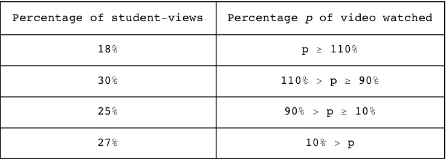

A8: GauchoCast viewing analysis¶
In this appendix we explore whether my GauchoCast video solutions from my Summer 2015 ENGR 3 course were better than just posting PDFs of the homework solutions.
GauchoCast offers richer usage statistics than mere PDFs. With PDF solutions, an instructor can determine only that a student downloaded the PDF, not whether the student actually opened the PDF and studied it. In contrast, GauchoCast records which students viewed the videos, when, and for how long. This gave us much better insight into how many students accessed our solutions.
How many students watched the homework solution videos?
This plot describes how many unique students viewed each of the 15 GauchoCast videos (one per homework problem):

On average, 7.7 students viewed each video (23% of the class). Many students watched the first video because it was novel, and many watched the last video because it was released the night before the final exam. But the majority of the videos were largely ignored by most of the class.
When a student watched a video, how long did he or she watch it?
To answer this question, we tabulated the fraction of each GauchoCast video (each representing one homework problem’s solution) that each student watched. Specifically, for each video and each student who watched some of it, we tabulated how many seconds the student watched the video, expressed as a percentage of the video’s length. For example, if a student watched 4 minutes of the 5-minute video for homework 1 problem 3, we call this an 80% viewing event. It still counts as an 80% viewing event if the student watches two 2-minute chunks of the video.
Note that >100% viewing events are possible. This occurs if a student watches the video repeatedly, say, once after it is released and again in preparation for the exam.
Ideally, each of the 33 students would watch each of the 15 videos to completion, resulting in 495 “100% viewing events”. In reality, there were only 116 viewing events, whose viewing-percentages deviate wildly from 100%. The viewing-percentages of the 116 viewing events are shown in the following histogram:
From this graph, we observe:
- The 26% hump on the left corresponds to <10% viewing events, i.e., 31 of the 116 viewing events correspond to a student watching less than 10% of the video. This may correspond to students pausing the video to examine the computer code, but not bothering to listen to the code’s explanation.
- The hump at x=100 corresponds to viewing events where the students watched 100% of the video (as intended).
- The scattered bumps with x>100 correspond to viewing events where students re-watched videos many times.
Some relevant statistics of this histogram are summarized in the following table:
Practically speaking, this means that when a student views a video:
- A sixth of the time, they’ll watch it multiple times throughout the course (>110%)
- A third of the time, they’ll watch it as intended (~100%)
- A quarter of the time, they’ll watch some of it (10%-90%)
- A quarter of the time, they watch practically none of it (<10%)
In summary, the GauchoCast homework solutions were utilized by roughly a quarter of the class, and of those, about half watched the videos to completion. Their viewing habits exhibited considerable variability. The most important question — did the students benefit more than from traditional PDF solutions? — remains unanswered due to difficulty in assessing how many students study PDF solutions and to what degree. But at least these results establish a baseline for further investigation in subsequent courses.